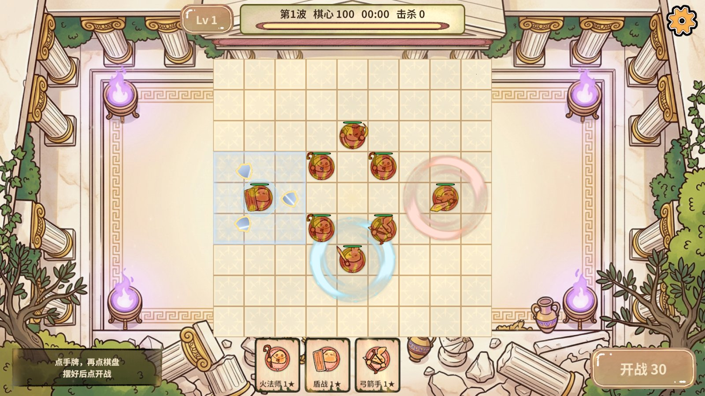
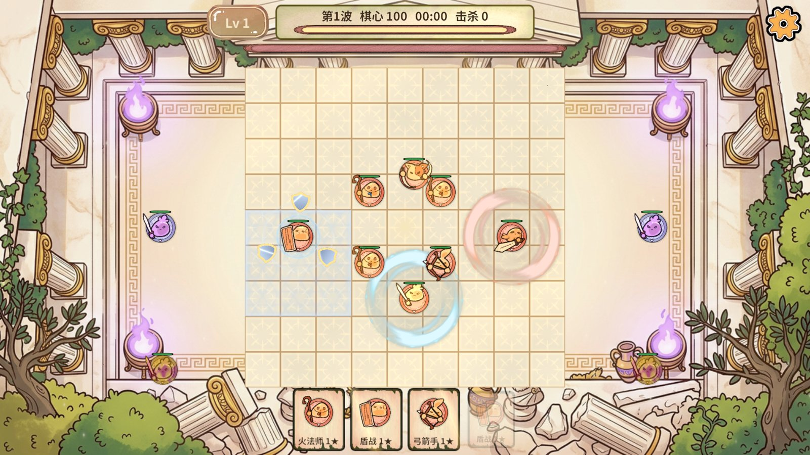
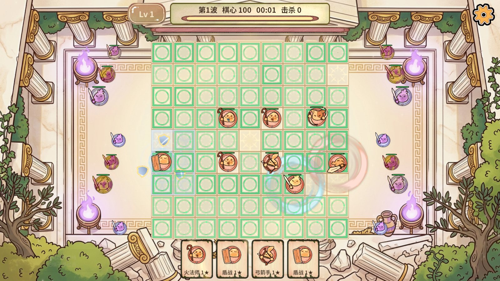
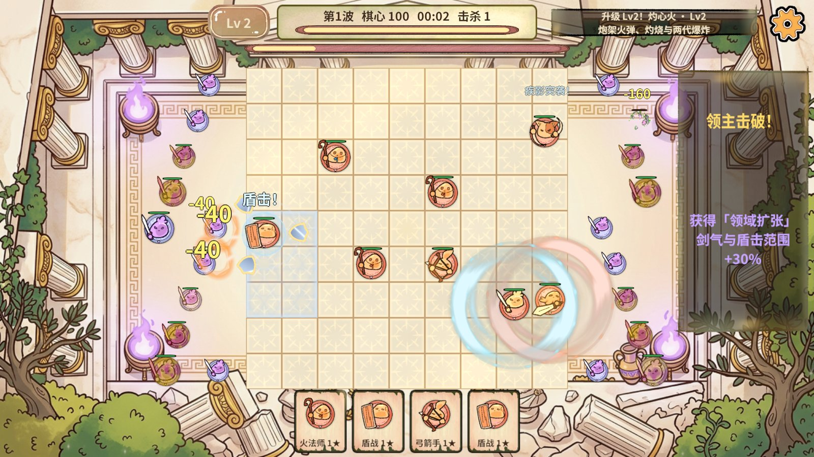
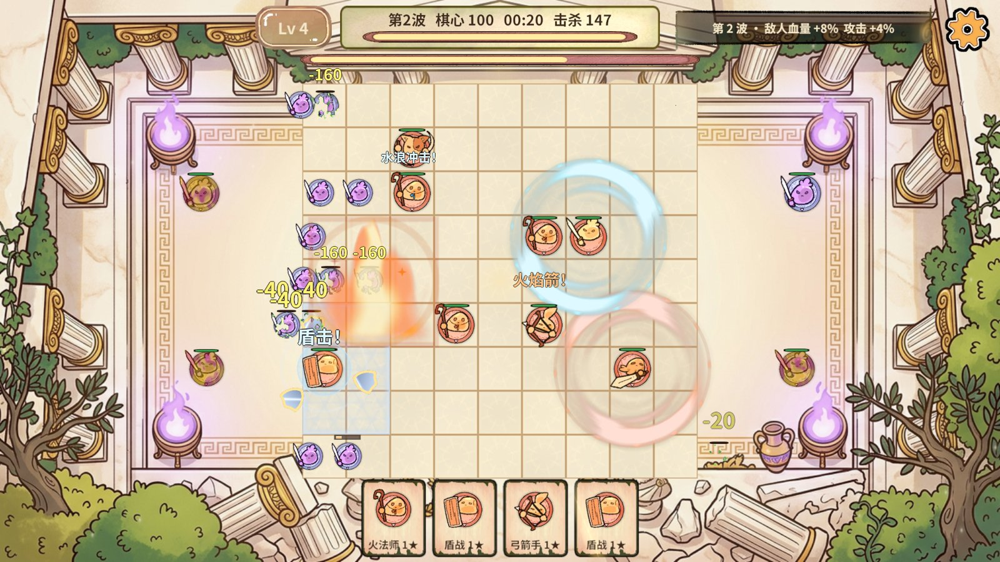
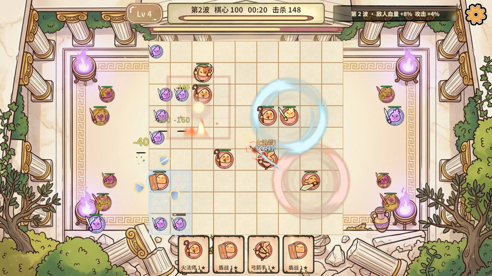
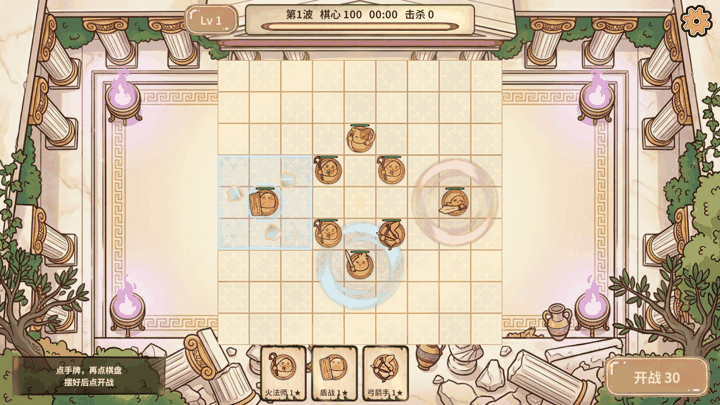
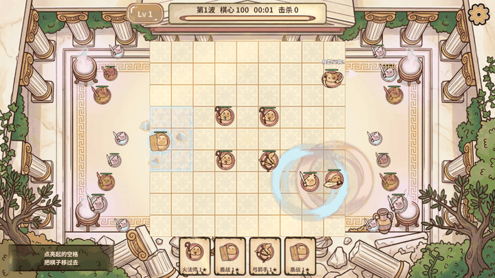
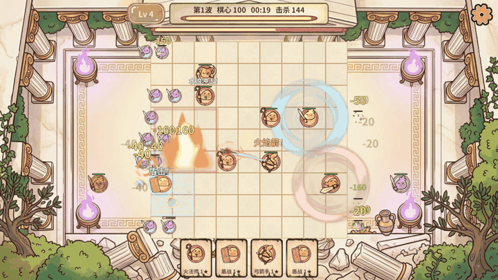

适用范围：本次自动化运行。结论只由断言决定；图片只能证明当时画面，不能替代数值断言。
1. 概览
| 报告目录 | G:\RevRoot\MyRevGame\RevGame_Client\文档\进度同步\无尽第四轮_快节奏敌潮与领主滚雪球验收_2026-11-02 |
|---|---|
| 截图数量 | 6 |
| 动图数量 | 3 |
2. 指标
| 结论 | 通过（Editor + 真实PC AB；手机/真机未测） |
|---|---|
| 规则夹具 | rules 13/13 · extended-rules 27/27 · boss-rules 66/66 · guard-rules 28/28 · snowball-rules 28/28（共 162 条断言） |
| 盾战 | 防御区改为以自身为中心 3×3（单块 9 格、两块并集 14 格）；盾击打 3×3 范围内敌人、范围外不受伤；环绕盾牌公转半径约 1 格，不再贴身 |
| 选牌后点棋（Bug 修复） | 先点手牌再点不能合星的己方棋子：手牌放下、选中棋子、绿色移动范围亮起、可正常移动；实战与夹具均通过 |
| 远程攻速 / 组合技 | RangedAttackSpeedBonus=11（×12）；出手间隔 0.033 秒短于 0.1 秒模拟步，改为一步内连发（每步上限 4 发，积压只算一步）；组合技 Every=2 |
| 敌潮 | 外围上限 120→240、移速 +50%、出生/入侵/精英间隔 −50%，一步内按间隔连刷（每步上限 4 只）；排队名次改为排序发号，240 只不再两两比较 |
| 出生缩小 | 出生视图用 DOTween 在 1.4 秒内平滑缩到网格方块大小，再换回批量网格；尸体溶解也按网格大小，回池前复原缩放 |
| 波次与领主 | 一波 20 秒、每 10 波（200 秒）一只领主并推“领主来袭”大横幅；敌人血量每波 +8%、攻击每波 +4% |
| 领主奖励滚雪球 | 击杀领主从 Excel EndlessBoon 表随机抽一条（伤害/攻速/生命并回满/范围/组合技/棋心），永久累加并存档；右侧奖励卡旋转回弹弹入 4 秒，颜色来自表 |
| 实战 21 秒 | 击杀 147、棋心 100、Lv4、组合技喊招 38 次、出生缩小 155 次、反馈预算未越界 |
| 整帧 p95 / p99（Editor，无截图） | 4.61 ms / 9.76 ms（打到第 3 波） |
| 服务 Tick 平均 / 最大 | 0.23 ms / 10.6 ms |
| GC（Editor 整帧，无截图） | 约 9.3 MB/s |
| 未验证 / 风险 | 手机帧率未测；领主自然击杀（200 秒）未在画面里打出来，奖励卡用隔离局 endless.boss-reward 走真实奖励流程验收；前 40 秒棋心未掉血，前期压力偏低，后期靠波次成长 |
3. 截图






4. 动图
GIF 用来观察动态效果；单帧截图表达不了连招、位移与粒子节奏。



5. 说明
测试通道：RevMCP rev_run 计划（以 rev_mcp.py run 命令行形态执行，未通过常驻 MCP stdio 会话）与 RevCLI 编辑器动作。性能为 Unity Editor 整帧，不代表手机。本轮无新增第三方素材。